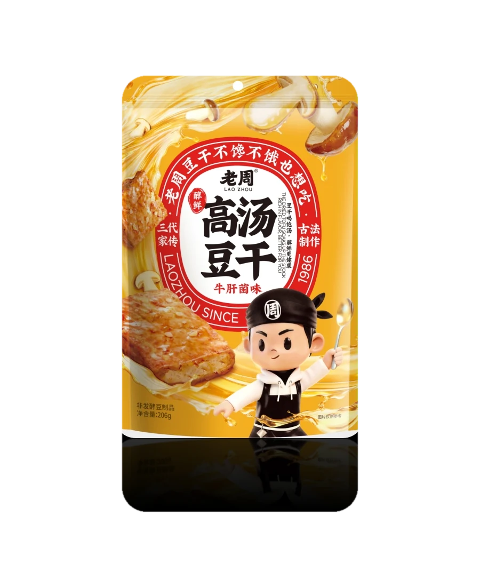
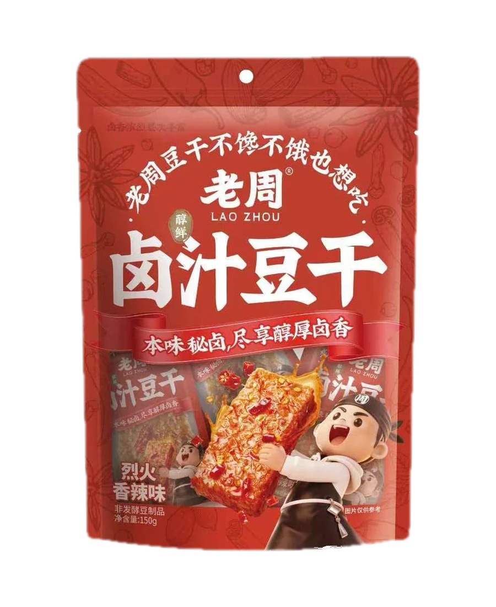
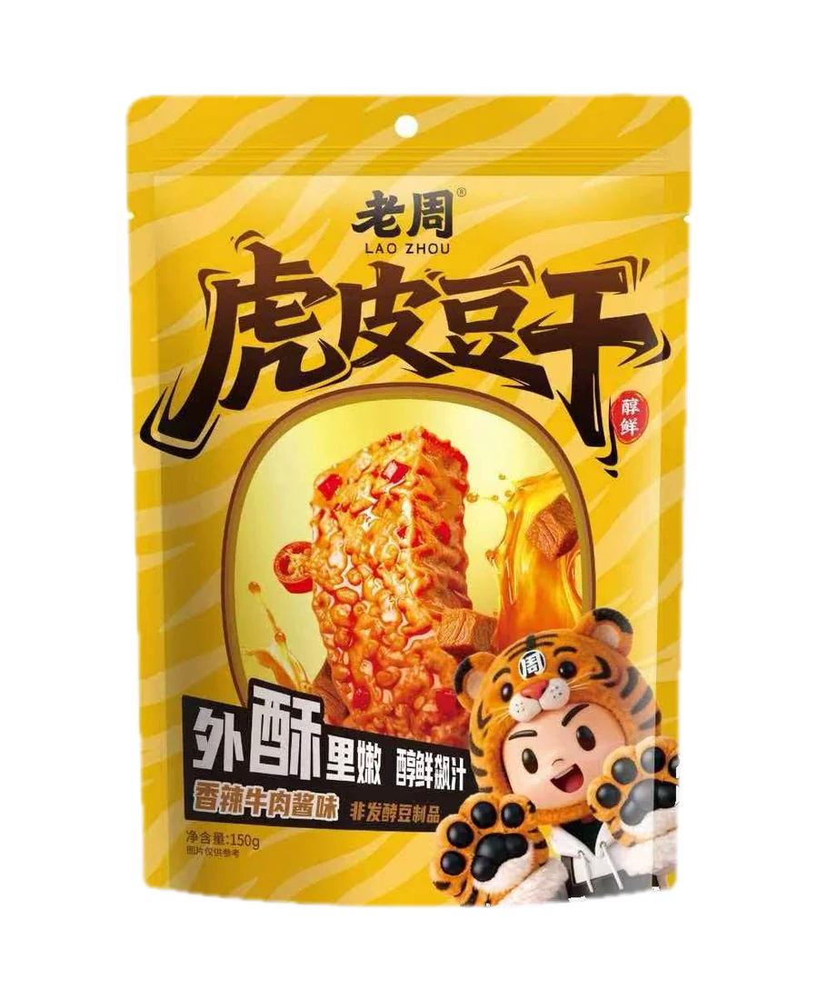
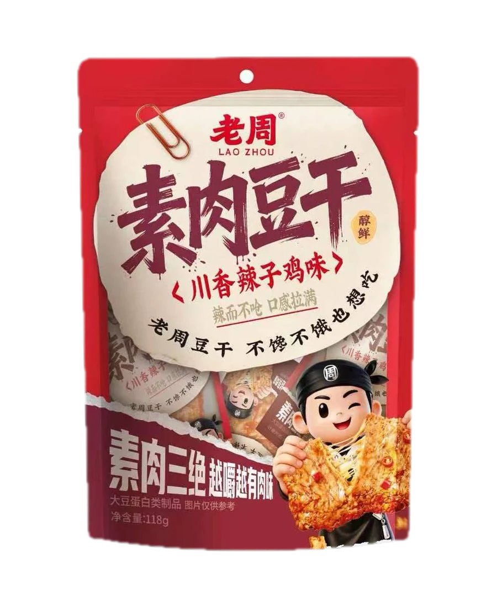
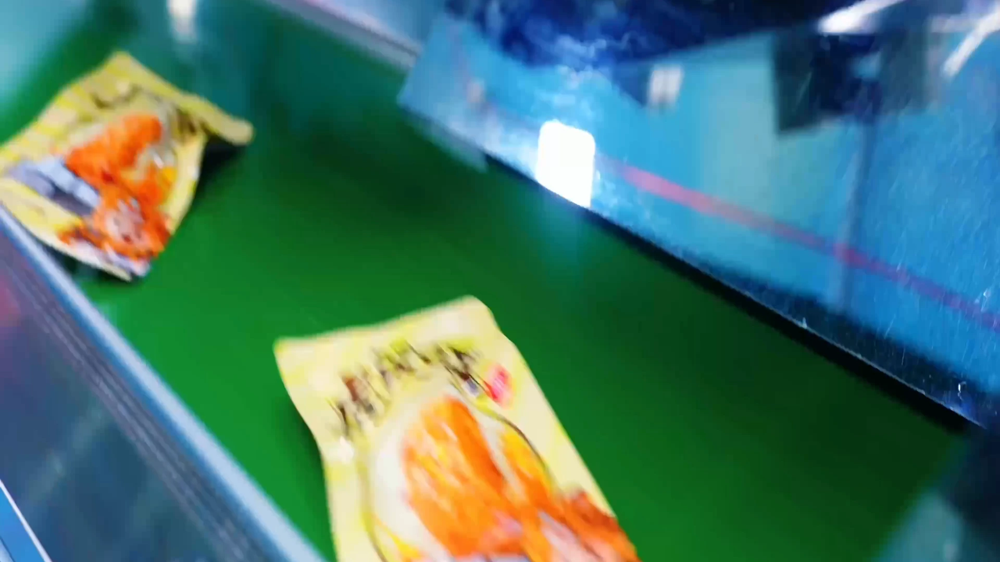

01

High-Broth Tofu
The signature range. Tofu slowly infused with a rich, savory broth for a tender, juicy bite.
Explore high-brothChinese tofu snacks · Since 1986
Rich broth, tender-chewy tofu and deep umami. Ready to eat, and made for shelves, menus and private-label programs around the world.

“Broth is not painted on. It is slowly worked into the tofu.”
The LaoZhou differenceWhy this tofu tastes different
The tofu is slowly braised in rich broth or a seasoned braise, giving it a juicy, tender-chewy bite and a savory finish that lingers far longer than a surface coating.
Time and broth create flavor through the tofu, not simply on top of it.
Rich high-broth, familiar classic braise, textured crispy-skin and firmer meat-style tofu.
Convenient retail packs for shelf or e-commerce, plus bulk packs for foodservice and private label.
The range

The signature range. Tofu slowly infused with a rich, savory broth for a tender, juicy bite.
Explore high-broth
A familiar Chinese braise with deep soy and spice. Soft, juicy and satisfyingly savory.
Explore classic
A golden, textured exterior gives way to a soft center. Crisp outside, juicy within.
Explore crispy-skin
A firmer, more fibrous chew made from soy. Deeply seasoned for a hearty savory bite.
Explore meat-styleCraft, not shortcuts
From careful soybean selection to controlled forming, high-temperature frying and sealed cooking, LaoZhou combines traditional technique with modern production discipline.
Inside the factory
Automation handles repetition. People watch over quality. See how a traditional Chinese snack is made with a more precise, connected production process.
PLC-controlled forming and digital coordination across the line.
A consistent path from selected soybeans to sealed, ready-to-eat tofu.


Factory film · 1:54
Go behind the scenes of the new LaoZhou factory and follow the craft from raw ingredient handling to packing.
Retail · Foodservice · Private label
Ask for a trial selection, discuss your packaging requirements or request the product and compliance documentation for your market.
LaoZhou at a glance
A concise buyer overview, with a direct route to the product range and the people who can answer detailed questions.
Company
LaoZhou Foods has made Chinese tofu snacks in Jiangsu since 1986, with a modern intelligent production base opened in 2024.
Products
High-Broth Tofu, Classic Braised Tofu, Crispy-Skin Tofu and Meat-Style Tofu, each with a distinct texture and flavor direction.
Formats
Retail packs from 118 g to 206 g, a 20 × 28 g classic carton and 2 × 2.5 kg bulk packs for foodservice and distribution.
Trade
Available for importers, distributors, Asian grocery, retail, e-commerce, foodservice and private-label discussions.
Production
Traditional braised flavors made through 15 standardized steps, PLC-controlled forming and controlled cooking and sterilization.